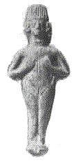

http://biblelight.net |
I don't give a hoot what the Hebrew text says, or what they say the word means.What follows is a discussion taken from the tnn.religion.catholic newsgroup (or Email) in which I answered a challenge issued to Sola Scriptura advocates by Bryan Mccahill, a Roman Catholic. (Some spelling and obvious errors have been corrected).
Bryan Mccahill issues a challenge, 4 April 1997:
I've said in a previous post, that in regard to the "idol-image" thing there is a passage in scripture that gives Protestants much difficulty. In Gen 31:19, Rachel steals her fathers "terafim". The Protestants translate this as "images". (i.e., forbidden by the first commandment). However in Hosea 3, the prophet foretells the lamentable state of the Israelites, saying they will be long without King, Priest, Sacrifice, Altar, Ephod or Terafim. This indicates that in the proper context a "Terafim" is not only not an evil thing, but something that sits alongside, King, Priest, Sacrifice, Altar and Ephod.
So figure that one out, my "sola scriptura" friends.
Michael Scheifler's response, Fri, 04 April 1997:
BMccahill could not be more wrong in his implication that teraphim were probably holy or permitted or somehow authorized by God:
-----
On Genesis 31:19
 These “images,” teraphim (see Judges 17:5; 18:14; etc.), were usually small (v. 34) human figurines, occasionally larger, often made of wood (1 Sam. 19:13-16). Near Eastern excavations have brought them to light in profuse numbers, made of wood, clay, and precious metals. Some represent male gods, but the majority are figurines of female deities 2 to 3 in. in length. They were used as household gods or were carried on the body as protective charms. Since most of them represent nude goddesses whose sexual features are accentuated, they were probably thought to promote fertility. This may be the reason Rachel especially cherished them. Cuneiform texts from Nuzi in Mesopotamia reveal that the household gods were inherited by adopted sons only when no actual sons were present at the father’s death. If a man had sons, his gods could not go to his daughters. Rachel therefore had no right to her father’s household gods, as Jacob frankly admitted
(Gen. 31:32). Documents found at Nuzi, in Mesopotamia, indicate that in the patriarchal age the possession of the family’s household gods, such as Laban had, guaranteed to their holder the title to his father’s properties. This was probably the chief reason why Laban was so eager to retrieve them (see vs. 30, 33–35).The Mesopotamian laws decreed capital punishment for the theft of divine property (Code of Hammurabi, sec. 6;), and the validity of this law was recognized by Jacob in his declaration that whoever had Laban’s gods should die (ch 31:32). He seems to have learned later that these and other gods were in the possession of his wives, hence demanded their surrender and buried them (ch 35:2–4). During the period of the judges Micah set up teraphim and other idols in his house and arranged for their worship (Jgs 17:4, 5). These cult objects, later carried to Dan, probably formed the nucleus of the idolatrous worship that existed there for centuries (ch 18:14, 30, 31). Samuel declared Saul’s sin of stubbornness to be as idolatry (Heb. teraphim; 1 Sa 15:23). Hosea denounced the use of teraphim in the northern kingdom of Israel (Hos 3:4). Josiah destroyed them wherever he could find them in his work of reformation (2 Ki 23:24), but Zec 10:2 suggests that some were possibly found among the Jews as late as the postexilic period.
Jacob tells Israel to put away strange gods:
[KJV] Gen 35:2 Then Jacob said unto his household, and to all that were with him, Put away the strange gods that are among you, and be clean, and change your garments:
The prospect of meeting with God at Bethel led to a thorough work of reform. There was much to be done before Jacob and his household were ready to face the Lord (see Amos 4:12; 1 John 3:3). Out of consideration for his wives Jacob had tolerated the presence of idols in their tents. These strange gods probably included the teraphim Rachel had stolen from her father (Gen. 31:19), the images of his servants, and others which may have come into the possession of his sons with the spoils of Shechem.
The above is from my SDA Bible Commentary and Bible Dictionary.
-----
From Holman's Bible Dictionary (computer version):
Teraphim are related to divination (Judg. 17:5; 18:14-20; 1 Sam. 15:23; 2 Kings 23:24; Hos. 3:3-4; Ezek. 21:21; Zech. 10:2)-----
From Smith's Bible Dictionary, Thomas Nelson Publisher:
The teraphim, translated "images" in the Authorized Version, carried away from Laban by Rachel were regarded by Laban as gods, and it would therefore appear that they were used by those who added corrupt practices to the patriarchal religion. Teraphim again are included among Micah's images. Judges 17:3-5; 18:17,18, 20. Teraphim were consulted for oracular answers by the Israelites, Zech. 10:2; comp. Judges 18:5,6; 1 Sam 15:22,23; 19:13,16, LXX., and 2 Kings 23:24; and by the Babylonians in the case of Nebuchadnezzar. Ezek 21:19-22.
-----
From the New Bible Dictionary, Inter-Varsity Press:
These objects [teraphim] are mentioned in every OT period... When mentioned in Israelite contexts they are almost always condemned, directly
(1 Sa. 15:23, 2 Ki. 23:24) or indirectly(Jdg. 17:6; Zc. 10:2). In their use, they are mostly associated with divination: note the pairing of ephod and teraphim in the idolatrous religion of Micah (Jdg. 17:5, etc.)-----
So, the fact that Israel possessed teraphim at times, or even most of the time, is proof of their constant apostasy, not proof that teraphim were approved by God!
Far from being a problem for Protestants as BMccahill claims, Protestants easily recognize teraphim for the pagan idols that they were. This only shows that BMccahill probably does not possess a non-Catholic Bible dictionary or commentary which would clearly explain to him how teraphim are idols indicating apostasy. I would suggest that he needs to consult Protestant publications for what Protestants believe, and not Catholic sources.
It is also curious to note that these teraphim idols were consulted as oracles. Roman Catholics do exactly the same at sites of Marian apparitions, that have statues or images of Mary that will allegedly weep tears, bleed blood etc.
Michael Scheifler continues, Sun, 06 April 1997:
BMccahill has asked me via Email to explain specifically Hosea Chapter 3 and teraphim in detail:
[KJV] Hosea 3:1 Then said the LORD unto me, Go yet, love a woman beloved of her friend, yet an adulteress, according to the love of the LORD toward the children of Israel, who look to other gods, and love flagons of wine.The Lord tells Hosea to take an adulteress as his wife. This adulteress is symbolic of Israel who have turned to idolatry. Yet this taking an adulteress as a wife is symbolic of God's love for fallen apostate Israel.
[KJV] Hosea 3:2 So I bought her to me for fifteen pieces of silver, and for an homer of barley, and an half homer of barley:The price paid is very low for the times, about what would be paid for a common maidservant, showing in symbolism how far Israel had fallen.
[KJV] Hosea 3:3 And I said unto her, Thou shalt abide for me many days; thou shalt not play the harlot, and thou shalt not be for another man: so will I also be for thee.No longer permitted to be the harlot, the wife, symbolic of Israel, would *not* be given full status as a wife either. A period of deprivation (captivity) was prophesied to be endured by Israel.
[KJV] Hosea 3:4 For the children of Israel shall abide many days without a king, and without a prince, and without a sacrifice, and without an image, and without an ephod, and without teraphim:Because of their apostasy and idolatry (v.1) Israel would go into captivity where they would be denied their pagan idols, images, and associated pagan ephods (priestly garb), but they would also lose their king and princes. (The kingdom would be lost.) This parallels and explains the symbolism of verse 3.
[KJV] Hosea 3:5 Afterward shall the children of Israel return, and seek the LORD their God, and David their king; and shall fear the LORD and his goodness in the latter days.Following their captivity by Assyria, Israel would return to the Lord (repent), and David would be their king.
(For the captivity prophesied, see beginning with 2 Kings 18:9)
So while BMccahill claims that the association with items in verse 4 somehow indicate that teraphim where accepted by God, the idolatry and apostasy of the images, ephod and teraphim are equated with harlotry in verse 3, and the loss of princes and king with the deprivation (captivity) or withholding of full status with God, as also indicated by verse 3. Clearly this punishment of Israel by going into captivity is due to their idolatry as indicated in verse 1. Another verse is worth noting:
[KJV] 1 Sam 15:23 For rebellion is as the sin of witchcraft, and stubbornness is as iniquity and idolatry [teraphiym:H8655]. Because thou hast rejected the word of the LORD, he hath also rejected thee from being king.Please note that the word "teraphim" is equated with iniquity and witchcraft and is translated as idolatry. There is no way that these idols were acceptable to God, not any more than the golden calf was acceptable at Sinai.
Bryan Mccahill responded, 6 April 1997:
Sorry , Mike, but "that dog won't hunt". You call upon surrounding passages in order to create the visual illusion of a buttressed argument, but the fact remains. Terafim, in Genesis 31:19, is translated in Protestant bibles as "images", but in Hosea, seeing that it does not conform to their invented doctrine, leave the word untranslated, as "terafim".(better that no one understand it, right?) You're dead on this one, partner. Hosea 3:4, shows plainly that along with a King, a Priest, an altar and ephod, terafim had their rightful places in Jewish society, and derivatively, Christian society as well; not as idols, but as visual aids to inspire believers and raise their spirits to God.
Michael Scheifler's response, Sun, 06 April 1997:
This just shows how desperate BMccahill is to justify statues and images in Catholic worship. I expect that every Protestant commentary or Bible Dictionary define Teraphim as idols showing apostasy, yet BMccahill maintains that Protestants have some kind of "problem" with interpreting Hosea 3.
> You call upon surrounding passages in order to create the
> visual illusion of a buttressed argument... It is called context, and is quite necessary to ascertain the truth.> Hosea 3:4, shows plainly that along with a King, a Priest,
> an altar and ephod, terafim had their rightful places in
> in Jewish society, and derivatively, Christian society
> as well; not as idols, but as visual aids to inspire
> believers and raise their spirits to God. As archeology has shown, these teraphim were most frequently nude female figurines with accentuated sexual features. BMccahill is so blind to the truth and so married to Catholic teaching and practices that he would rather attempt to prove the merits of idolatry for Israel in Hosea than accept the truth. There are none so blind as those who refuse to see the truth.Perhaps BMccahill would like to comment on the 6th Chapter of Baruch and how that encourages the crowning and dressing of idols, carrying them in procession, and lighting candles in front of them, like Catholics do with statues of Mary, Peter, and saints.
Bryan Mccahill responded, 7 April 1997:
Michael Scheifler, bereft of a solution to the dilemma presented by Hosea 3:4, hops to another part of scripture, and replies:
> Perhaps BMccahill would like to comment on the 6th Chapter of
> Baruch and how that encourages the crowning and dressing of idols,
> carrying them in procession, and lighting candles in front of them,
> like Catholic do with statues of Mary, Peter, and saints. Clearly, this chapter talks about terafim as idols, because the Babylonians worshipped them as gods. I see no need to reiterate traditional Catholic teachings with regard to statues and images of the saints. Look it up in the Catholic Catechism - there you will find the official teaching on the subject. But you still are unable to explain how "terafim" sits alongside the other evidences of a happy nation, viz., King, Priest, altar and ephod. I'm telling you partner, you're a dead man on this one.
Michael Scheifler's response, Sun, 06 April 1997:
Since you are so certain of yourself, then I expect that you will not object to my putting our entire conversation verbatim on my web page to demonstrate the effectiveness of your argument. As yet I do not know your first name, but in order to give you proper credit for your remarks, could you please provide it? Should you not approve of this, then I will delete any reference to your name in my article, and keep you quite anonymous. By the way, do you have a proper official Catholic source to cite for the interpretation of Hosea 3 that you present?
Bryan Mccahill's response of 7 April, 1997.
Not at all - be my guest. As a matter of fact, you might as well include the pronouncement on this subject by the 7th ecumenical council, or Third council of Nicea of 787 AD attended by 367 Bishops:
"To make our confession short, we keep unchanged all the ecclesiastical traditions handed down to us, whether in writing or verbally, one of which is the making of pictorial representations, agreeable to the history of the preaching of the Gospel, a tradition useful in many respects, but especially in this, that so the incarnation of the Word of God is shown forth as real and not merely fantastic, for these have mutual indications and without doubt have also mutual significations. We, therefore, following the royal pathway and the divinely inspired authority of our Holy Fathers and the traditions of the Catholic Church (for, as we all know, eth Holy Spirit indwells her), define with all certitude and accuracy that just as the figure of the precious and life-giving Cross, so also the venerable and holy images, as well in painting and mosaic as of other fit materials, should be set forth in the holy churches of God, and on the sacred vessels and on the vestments and on hangings and in pictures both in houses and by the wayside, to wit, the figure of our Lord God and Saviour Jesus Christ, of our spotless Lady, the Mother of God, of the honourable Angels, of all Saints and of all pious people. For by so much more frequently as they are seen in artistic representation, by so much more readily are men lifted up to the memory of their prototypes, and to a longing after them; and to these should be given due salutation and honorable reverence not indeed that true worship of faith which pertains alone to the divine nature; but to these, as to the figure of the precious and life-giving Cross and to the Book of the Gospels and to the other holy objects, incense and lights may be offered according to ancient pious custom. For the honor which is paid to the image passes on to that which the image represents, and he who reveres the image reveres in it the subject represented."> As yet I do not know your first name, but in order to give you proper credit for your remarks, could you please provide it?
Bryan
Scheifler also asks:
> By the way, do you have a proper official Catholic source to cite for the interpretation of Hosea 3 that you present?
Sure do - from the original Douay annotations:
Hosea 3:4 "Theraphim signifying images good or bad, being here joined with King, Prince, sacrifice, altar and ephod, must needs signify lawful images such as were religiously used in the temple of God. 3 Reg 7 v. 36"
Knock yourself out.
Michael Scheifler's response of 7 April 1997:
I too have a Douay Rheims Bible, one with the Imprimatur of James Cardinal Gibbons of 1899 and it has no such note in the margin. It seems there has been a change in Catholic thinking on the matter since the Douay was originally published in 1610. And the New American Bible is an updated or revised version of the Douay, which was completed in 1970, and was previously known as the Confraternity Bible. Here is what it says on Hosea:
The New American Bible for Catholics on Hosea Chapter 3:
Hosea 3:1 Again the Lord said to meNote for 3:1 - Raisin cakes: offerings to the fertility goddess Ashera, the female counterpart of Baal; of Jer 7:18; 44:19.
Give your love to a woman
beloved of a paramour, and adulteress;
Even as the Lord loves the people of Israel,
though they turn to other gods
and are fond of raisin cakes.
Hosea 3:2 So I bought her for fifteen pieces of silver and a homer and a lethech of barley.Note for 3:2 - Homer: about 10 bushels. Lethech: a half-homer.
Hosea 3:3 Then I said to her:Notes for 3:4 - Sacred pillar: the stone massebah, originally perhaps a phallic symbol, representing Baal. These were also used, with another signification, in Israelite worship; See notes [below] on Gn 28:18; Ex 34:13. Ephod: an instrument used in consulting the deity; cf 1 Sm 23:6-12; 30:7; See notes [below] on Ex 28:6, 15-30. Household idols: images regarded as the tutelary deities of the household; cf Gn 31:19; Jgs 17:5; 18:14; 17f.
"Many days you shall wait for me;
you shall not play the harlot
Or belong to any man;
I in turn will wait for you."Hosea 3:4 For the people of Israel shall remain many days
without king or prince,
Without sacrifice or sacred pillar,
without ephod or household idols.
Note for Genesis 28:18 - Memorial stone: In Hebrew masseba, a stone which may vary in shape and size, set upright and usually intended for some religious purpose. Since the custom of erecting such "sacred pillars" in Palestine went back to its pre-Israelite period, their pagan associations were often retained; therefore, later Israelite religion forbade their erection (Lv 26:1; Dt 16:22) and ordered the destruction of those that were associated with paganism (Ex 34:31; Dt 12:3)
Note for Exodus 28:6 - Ephod: this Hebrew word is retained in the translation because it is the technical term for a peculiar piece of the priestly vestments, the exact nature of which is uncertain. It seems to have been a sort of apron that hung from the shoulders of the priest by shoulder straps
(v 7) and was tied around his waist by the loose ends of the attached belt (v 8).Notes for Exodus 28:15-30 - Breastplate in shape like a modern altar burse, it was a pocket-like recepticle for holding the Urim and Thummin (v 30), and formed an integral part of the ephod, to which it was attached by an elaborate sytem of rings and chains. Both the ephod and the breastplate were made of brocaded linen.
Note for Exodus 34:13 - Sacred poles: "Ashera" was the name of a Canaanite goddess. In her honor wooden poles (asherot) were erected, just as stone pillars (massebot) were erected in honor of the god Baal. Both were placed near the altar in a Canaanite shrine.
So, it would seem that now, based on the New American Bible for Catholics, at least some Catholics themselves interpret the sacred pillar, ephod and household idols to all be quite pagan in nature, and it is quite clear from verse 1 that Israel was going into captivity because of their idolatry- their love of other gods.
In context the items in verse 4 were clearly being taken away because of their pagan idolatrous nature. Yes, altars and an ephod were used in the Hebrew sanctuary, but the items being described in Hosea are paganized versions related only to idol worship, for which Israel is being condemned and going into captivity for as punishment, so they were even going to lose the right to govern themselves (king and prince). It seems that the Catholic scholars that produced the notes for the Catholic New American Bible agree.
Bryan Mccahill's next response of 7 April, 1997.
Have reviewed your web page, and respond as follows: You say:
> I too have a Douay Rheims Bible, one with the Imprimatur of James Cardinal Gibbons of 1899 and it has no such note in the margin. It seems there has been a change in Catholic thinking on the matter since the Douay was originally published in 1610.
An Imprimatur means that it is free from doctrinal error. It does not necessarily indicate that all annotations are infallible, or are not subject to dispute.
Next: [on the NAB for Catholics]
First of all, I don't know where they get "sacred pillar" from "altari", which is used in the Latin Vulgate. I would not be surprised, however if the annotators consulted a Protestant Bible for their information. Beware of any "American" Catholic anything - it's a watchword for liberal. Though there is nothing in the notes which is contrary to official Catholic teaching, it does not require one's assent either. We have a lot more freedom than Protestants in this area.
Nevertheless, your interpretation is incoherent. I don't see the connection between the verses previous (Hosea 3: 1,2,3) or after (Hosea 3:5 ) except that we are to understand in the next chapter, that God has punished Israel because (Hosea 4:1-2) "there is no truth, and there is no mercy, there is no knowledge of God in the land, . Cursing and lying and manslaughter and theft and adultery hath overflowed, and blood hath touched blood." Because of this, "many days shall the children of Israel be without King, and without prince, and without sacrifice, and without altar, and without ephod, and without teraphim." Thus they were deprived of their teraphim by God, temporarily.
You might also be interested in another annotation from the Douay concerning Exodus 20:4 (what Protestants call "graven images")
" Here, the same falsifiers of Christian doctrine not only pervert the sense of Holy Scripture, wresting that against images, which is spoken against idols, but also shamefully corrupt the text, by translating "graven images", neither following the Hebrew, Greek nor Latin. For the hebrew word "pefel", is the very same "sculptile" in Latin, that is "a graven or carved thing". The Greek have "eidwol" an idol, thus all Protestant English Bibles are false."
P.S. and must you be so lengthy?
Michael Scheifler's response of 7 April 1997:
> An Imprimatur means that it is free from doctrinal error. It does not necessarily indicate that all annotations are infallible, or are not subject to dispute.
Then that surely applies as well to the notes in your edition of the Douay Rheims.
The problem you are encountering with sacred pillars may be due to your reliance on the Vulgate, which is itself a translation. The word in question in the Hebrew/Chaldee is H6754/5 "tselem". Note this prohibition in Leviticus that uses the exact same word-
Lev 26:1 Ye shall make you no idols [H3808, eliyl] nor graven image [H6754, tselem], neither rear you up a standing image [H4676, matstsebah], neither shall ye set up any image [H4906, maskiyth] ] of stone in your land, to bow down unto it: for I am the LORD your God.So the exact same type of image is found in Hosea 3:4. Note that the prohibition in Leviticus is against bowing down before any image, pillar, or image of stone (maskiyth = statue or figure) what-so-ever. There are no exceptions mentioned.
Funny thing, the same wording is found in Exodus 20:4. For the word graven the word is
H6459, "pecel" which is derived from:H6458. pacal, paw-sal'; a prim. root; to carve, whether wood or stone:--grave, hew.
The word for image is H6754, "tselem" which means figure or likeness. The prohibition is against carving a statue, a graven image, and bowing down to it. I don't quite see the distinction the original Douay is trying to make. Isn't sculpting an idol and carving an idol the same thing? Interestingly the 1899 revised Douay Rheims takes a quite different approach:
Note for Exodus 20:4 - All such images, or likenesses, are forbidden by this commandment, as are made to be adored and served; according to that which immediately follows, thou shalt not adore them, nor serve them. That is, all such as are designed for idols or image-gods, or are worshipped with divine honour. But otherwise images, pictures, or representations, even in the house of God, and in the very sanctuary so far from being forbidden, are expressly authorized by the word of God. See Ex. 25:15 [18?]; chap 38:7; Num 21:8,9; 1 Chron. or Paralip 28:18,19; 2 Chron. or Paralip. 3:10.
You will not find, in all of scripture, where bowing down to any image was ever condoned. Not even in the Hebrew Temple did the priests bow down to the images of cherubims on the Ark or draperies. Bowing down to a king is a sign that you are his servant, and the same is true of idols. That is why bowing to any image, without exeception, is strongly prohibited. Yet the Catholic Church teaches you to do just that, bow down in front of statues and other images!
Exo 20:4 Thou shalt not make unto thee any graven image, or any likeness of any thing that is in heaven above, or that is in the earth beneath, or that is in the water under the earth:> We have a lot more freedom than Protestants in this area.
Exo 20:5 Thou shalt not bow down thyself to them, nor serve them: for I the LORD thy God am a jealous God, visiting the iniquity of the fathers upon the children unto the third and fourth generation of them that hate me;
Since Protestants have no Pope or Magisterium, and any Protestant can publish his or her own Bible with their own margin notes, something Catholics are denied, I hardly see how a Catholic has more freedom in this area. In fact, if you go strictly by long standing Catholic teaching, you are not permitted by the church to even own a Protestant Bible, whether it has notes or not. And you are not permitted to interprete scripture in any manner contrary to the established teaching or interpretation of the Catholic Church, whether published or not. That doesn't sound like freedom to me.
> P.S. and must you be so lengthy?
When you have the weight of evidence on your side, it is difficult not to present it.
Bryan Mccahill's email response of 8 April, 1997.
[Regarding my quote from Smith's Bible Dictionary above]
Very thorough...not. How come there is no mention of the passage I cited, viz., Hosea 3:4? Too embarrassed? And you've yet to explain why it is translated as "images" in Genesis and left as "terafphim" in Hosea. Obviously, an anti-catholic agenda was set in the minds of the translators, not an innocent search for truth.
Michael Scheifler's response of 8 April 1997:
I cited the Bible dictionaries to make the point that Protestants do not have the problem with teraphim that you have invented. A Bible dictionary is *not* a concordance. A concordance lists every occurance of a word in the Bible, a Bible dictionary defines and explains the term. What Smith's Dictionary does tell you is that teraphim were considered to be gods, that they were a corrupt practice (apostasy), and used as oracles (divination). I doubt you will find a Bible dictionary in print that claims teraphim were in any way approved by God.
> And you've yet to explain why it is translated as "images" in Genesis and left as "terafphim" in Hosea. Obviously, an anti-catholic agenda was set in the minds of the translators, not an innocent search for truth.
I fail to see your logic here. The word teraphim is left untranslated in the King James in each of the following verses in Judges as well-
Judges 17:5, 18:14,17,18, 20.
I would suggest that leaving just that word untranslated causes no confusion at all for those willing to study the matter. However, when a word has been translated, there is a possiblity of a mistranslation in context. A good example is your insistance that the word altar is in the text of the Vulgate, yet the word is "tselem" in the Hebrew text, which means an idolatrous image. So the Vulgate would appear to be a mistranslation, while more recent texts more correctly translate the term as image or sacred pillar.
So while you consider the New American Bible too liberal in their translation, I would suggest that on this verse, it has been willing to deal with the meaning of the original Hebrew, as do the Protestants, and break from the Vulgate.
In fact, if teraphim were left untranslated in every occurance in the Bible, perhaps you would be less likely to maintain that teraphim were permitted by God. Here are two examples-
1 Sam 15:23 For rebellion is as the sin of witchcraft, and stubbornness is as iniquity and [teraphim]. Because thou hast rejected the word of the LORD, he hath also rejected thee from being king.Please note the linking of teraphim with iniquity and witchcraft in 1 Samuel, and wizardry and abomination in 2 Kings. Are you at least willing to concede that teraphim are condemned in these two verses? If so, then on what basis can you claim just the opposite for Hosea, where the subject in the opening verse [Hosea 3:1] is idolatry?2 Ki 23:24 Moreover the workers with familiar spirits, and the wizards, and the [teraphim], and the idols, and all the abominations that were spied in the land of Judah and in Jerusalem, did Josiah put away, that he might perform the words of the law which were written in the book that Hilkiah the priest found in the house of the LORD.
Bryan Mccahill's next email responses of 8 April, 1997.
You know, I think your primary defense mechanism in this discourse is to write so much crap, that neither I nor anyone else has enough time to pay attention to it. You talk about Hebrew texts, as if they are incorruptible; like the first century Jews had no reason to change words or erase prophecies. What made them so pristine all of a sudden?
I'll pose my question another way. If teraphim is left AS teraphim in most places in the KJV, why did Rachel steal her Father's "images"? (which were teraphim in the original)
And why would the Isrealites FOR MANY DAYS BE WITHOUT, King, Prince, sacrifice, altar, ephod and teraphim, unless when their punishment was over, all of the above would be restored?
I told you you're dead, but you're too stubborn to admit that you're wrong.
> A good example is your insistance that the word altar is in the text of the Vulgate, yet the word is "tselem" in the Hebrew text, which means an idolatrous image.
Ahhh, so now "images" and teraphim are alongside each other? What Jewish text are you reading from anyway? It now makes no sense at all, because there's a redundancy.
By the way, teraphim is a statue. If one worships the statue, it is idolatry, and the statues would be "idols". If one honors the person that the statue represents, or in the case of Jesus, worships the person the statue represents, it is holy and pleasing to God. But they are both "teraphim" either way.
> I doubt you will find a Bible dictionary in print that claims teraphim were in any way approved by God.
Don't bet on it - I've got one.
Bryan Mccahill's newsgroup response of 8 April, 1997.
> Then that surely applies as well to the notes in your edition of the Douay Rheims.
Correct. There was nothing in the annotations contrary to Catholic doctrine.
> The problem you are encountering with sacred pillars may be due to your reliance on the Vulgate, which is itself a translation.
Yes - a translation of the Septaugint, which as you know was translated separately by 70 elders from Hebrew to Greek. Do you really think that a commonplace word like "altar" could be misunderstood? Why do you trust the Hebrew texts? There are no originals there either.
> The word in question in the Hebrew/Chaldee is H6754/5 "tselem". Note this prohibition in Leviticus that uses the exact same word-
> Lev 26:1 Ye shall make you no idols [H3808, eliyl] nor graven image [H6754, tselem], neither rear you up a standing image [H4676, matstsebah], neither shall ye set up any image [H4906, maskiyth] ] of stone in your land, to bow down unto it: for I am the LORD your God.
> So the exact same type of image is found in Hosea 3:4. Note that the prohibition in Leviticus is against bowing down before any image, pillar, or image of stone (maskiyth = statue or figure) what-so-ever. There are no exceptions mentioned.
Are you now talking about the word "altar"? Are you saying that instead of, King, Prince, sacrifice, altar, ephod and teraphim, it should read, King, prince, sacrifice image, ephod and teraphim? Now you have a redundancy that makes no sense whatsoever!
> Funny thing, the same wording is found in Exodus 20:4. For the word graven the word is H6459, "pecel" which is derived from: H6458. pacal, paw-sal'; a prim. root; to carve, whether wood or stone:--grave, hew.
What do you mean the same wording? How is "pecel" the same wording as anything you have mentioned before? I think your primary defense is to confuse the reader. I told you, the word "pefel" is translated in Greek as "idol", and Latin as "sculptile". Protestants merely chose the word "images" to support their anti-Catholic agenda.
> The word for image is H6754, "tselem" which means figure or likeness. The prohibition is against carving a statue, a graven image, and bowing down to it. I don't quite see the distinction the original Douay is trying to make. Isn't sculpting an idol and carving an idol the same thing? Interestingly the 1899 revised Douay Rheims take a quite different approach:
Sculpting an idol and carving an idol are the same thing, yes. But sculpting an "image" is not wrong. You can't make the distinction between an idol and an image. That's your whole problem. Is a statue of Abraham Lincoln an idol?
> Note for Exodus 20:4 - All such images, or likenesses, are forbidden by this commandment, as are made to be adored and served; according to that which immediately follows, thou shalt not adore them, nor serve them. That is, all such as are designed for idols or image-gods, or are worshipped with divine honour. But otherwise images, pictures, or representations, even in the house of God, and in the very sanctuary so far from being forbidden, are expressly authorized by the word of God. See Ex. 25:15 [18?]; chap 38:7; Num 21:8,9; 1 Chron. or Paralip 28:18,19; 2 Chron. or Paralip. 3:10.
I don't have a problem with this. Did it come from a Catholic Bible?
> You will not find, in all of scripture, where bowing down to any image was ever condoned. Not even in the Hebrew Temple did the priests bow down to the images of cherubims on the Ark or draperies. Bowing down to a king is a sign that you are his servant, and the same is true of idols. That is why bowing to any image, without exeception, is strongly prohibited. Yet the Catholic Church teaches you to do just that, bow down in front of statues and other images!
Yes, we do - agreed. But what you refuse to understand or accept, is that we do not attribute any "power" (for lack of a better word) to the image itself. We know what it's made of, and that's all it is. We are bowing to the person to whom that picture or statue represents. We also kiss the Pope's ring. If you don't like that, then you hardly would have liked seeing Jesus wash the feet of the Apostles either.
> Exo 20:4 Thou shalt not make unto thee any graven image, or any likeness of any thing that is in heaven above, or that is in the earth beneath, or that is in the water under the earth: Exo 20:5 Thou shalt not bow down thyself to them, nor serve them: for I the LORD thy God am a jealous God, visiting the iniquity of the fathers upon the children unto the third and fourth generation of them that hate me;
Yawn....haven't we covered this already?
> Since Protestants have no Pope or Magisterium, and any Protestant can publish his or her own Bible with their own margin notes, something Catholics are denied, I hardly see how a Catholic has more freedom in this area. In fact, if you go strictly by long standing Catholic teaching, you are not permitted by the church to even own a Protestant Bible, whether it has notes or not. And you are not permitted to interprete scripture in any manner contrary to the established teaching or interpretation of the Catholic Church, whether published or not. That doesn't sound like freedom to me.
What you'll find out though, is that there is little Church teaching on the absolute meaning of scriptural passages. Protestants generally insist on the meanings of certain passages. We have a lot of room to argue, as long as the opinion does not run flat into the face of Catholic teaching, i.e., as long as it is not heretical.
BAM said: >P.S. and must you be so lengthy?
> When you have the weight of evidence on your side, it is difficult not to present it.
I still think you have not explained my original question. You have beat around the bush and run all through the OT. So I'll say it again. How come Protestant Bibles translate Rachel's "teraphim" as "images", and in Hosea 3:4 they leave it as "teraphim"? I say, because they didn't know what to put there, and din't want anything to get in the way of their "no statues" heresy. Secondly, if the Israelites were being punished by being deprived of King, prince, sacrifice, altar, ephod and teraphim, for many days, indicating that it would not always be, then how can "teraphim", or images, or statues, be categorically sinful?
(still waiting)
BAM
Michael Scheifler's response of 8 April 1997:
So, in your opinion we cannot trust the Hebrew or Greek texts to be accurate?
I don't see where it makes any difference at all whether the word teraphim has been translated images or not. You see an anti-Catholic conspiracy where none exists. It seems you are forced into gyrations like this because you cannot provide any tangible evidence that teraphim were ever permitted or condoned by God.
> And why would the Isrealites FOR MANY DAYS BE WITHOUT, King, Prince, sacrifice, altar, ephod and teraphim, unless when their punishment was over, all of the above would be restored?
Perhaps you would like to quote the verse that specifically says sacred stones and teraphim will be restored to Israel?
> Ahhh, so now "images" and teraphim are alongside each other? What Jewish text are you reading from anyway? It now makes no sense at all, because there's a redundancy.
The Strong's Concordance contains with it a Greek and Hebrew dictionary, which I have been quoting from. For example H8655 in Strong's is teraphiym. You can get a copy of Strong's from most any bookstore. Strong's lists every occurance of the word in the Bible by verse. There are several different types of idolatrous images I can think of: figurines, statues, pillars, pictures, and engravings, and I expect there are probably words of each type, but they could just be interpreted also in a general category of pagan idolatrous images. So a verse might look repetative, but it probably is defining different categories of pagan images.
> By the way, teraphim is a statue. If one worships the statue, it is idolatry, and the statues would be "idols". If one honors the person that the statue represents, or in the case of Jesus, worships the person the statue represents, it is holy and pleasing to God. But they are both "teraphim" either way.
So the teraphim in the Bible, based on archeology, were mostly nude female figures. Who do you think they were worshipping?
Where does scripture permit kneeling or bowing in prayer before **any** statue at all, no matter who it is of?
I expect it will be obvious to all non-Catholic readers that you are a doctrine in search of Biblical support, no matter how thin, improbable, or even preposterous it appears. It is quite clear that you are going to believe what your Church teaches no matter what the Bible says on the matter. But, in any case, please quote the Bible Dictionary you have that extols the merits and virtues of teraphim. In addition to the publisher and author, please include the Nihil Obstat and Imprimatur information attached to it as well. I just might like to get a copy through the local Catholic Bookstore.
Bryan Mccahill's email response of 9 April, 1997.
> Perhaps you would like to quote the verse that specifically says sacred stones and teraphim will be restored to Israel?
Obviously, this was your only "out". Since this was a prophecy, however, I could easily say that they were restored in the Catholic Church, just as the passage from Malachias 1:11 was fulfilled by the Mass.
> So the teraphim in the Bible, based on archeology, were mostly nude female figures. Who do you think they were worshipping?
Nude females, I guess.. and I have admitted that there were certainly idols. But not all "teraphim" were worshipped.
> Where does scripture permit kneeling or bowing in prayer before **any** statue at all, no matter who it is of?
Nowhere that I've seen. But the Catholic Church is the "pillar and bulwark of truth". Thus, under the proper conditions (i.e., those that were promulgated at the Third Council of Nicea) one can kneel before images. By the way, I don't know of any Catholic who remotely believes that any statue has any "inherent" power. Just as you may look at a picture of your dead grandmother and say a prayer to God, we look at pictures or statues of saints and with the same love, ask them to pray for us. Just as a picture enkindles the memory of a loved one, a statue or painting can do the same. These were the champions of Christianity. Why shouldn't we honor them?
> I expect it will be obvious to all non-Catholic readers that you are a doctrine in search of Biblical support, no matter how thin, improbable, or even preposterous it appears. It is quite clear that you are going to believe what your Church teaches no matter what the Bible says on the matter. But, in any case, please quote the Bible Dictionary you have that extols the merits and virtues of teraphim. In addition to the publisher and author, please include the Nihil Obstat and Imprimatur information attached to it as well. I might like to get a copy through the local Catholic Bookstore.
I really don't have to provide any more than I already have provided, via the Third Council of Nicea. This was settled 1200 years ago, when your own ancestors were strict Catholics.
Michael Scheifler's concluding response of 9 April 1997:
I would offer that Bryan Mccahill's only support for his original implication that teraphim were condoned or authorized by God rests on nothing more than the Council of Nicea, which contradicts the plain teaching of scripture.
> Where does scripture permit kneeling or bowing in prayer before **any** statue at all, no matter who it is of?
|
Bryan Mccahill's response - Nowhere that I've seen. ...
|
But scripture does specifically condemn teraphim:
1 Sam 15:23 For rebellion is as the sin of witchcraft, and stubbornness is as iniquity and [teraphim]. Because thou hast rejected the word of the LORD, he hath also rejected thee from being king.And scripture does specifically prohibit bowing down to any image:2 Ki 23:24 Moreover the workers with familiar spirits, and the wizards, and the [teraphim], and the idols, and all the abominations that were spied in the land of Judah and in Jerusalem, did Josiah put away, that he might perform the words of the law which were written in the book that Hilkiah the priest found in the house of the LORD.
Exo 20:4 Thou shalt not make unto thee any graven image, or any likeness of any thing that is in heaven above, or that is in the earth beneath, or that is in the water under the earth:
Exo 20:5 Thou shalt not bow down thyself to them, nor serve them: for I the LORD thy God am a jealous God, visiting the iniquity of the fathers upon the children unto the third and fourth generation of them that hate me;
Lev 26:1 Ye shall make you no idols nor graven image, neither rear you up a standing image, neither shall ye set up any image of stone in your land, to bow down unto it: for I am the LORD your God.I want to thank Bryan for standing up for what he believes, and allowing me to post this discussion on my web page. Even though I believe the teaching of the Roman Catholic Church to be in error on this matter, I fully support Bryan's right to believe it, if he chooses to do so. That is what religious freedom is all about.
Genesis 31:19, 34, 35
Judges 17:5, 18:14, 17, 18, 20
1 Samuel 15:23, 19:13, 19:16
2 Kings 23:24
Ezekiel 21:21
Hosea 3:4
Zechariah 10:2
http://biblelight.net |